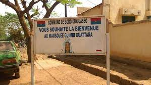
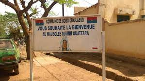

Listes des différents sites à visiter
Le mausolée de Guimbi OUATTARA
 


Histoire
Guimbi, parfois écris Guimbé Ouattara (1836–1919) était une dirigeante ouest-africaine et une cheffe militaire dans ce qui est aujourd’hui le Burkina Faso.
Ouattara était la fille aînée de Diori Ouattara et Makogo Ouattara. Son père est mort quand elle avait trois ans et son jeune frère lui a succédé. À l’âge de 15 ans, Ouattara avait été marié et elle a été veuve à trois reprises dans sa vie. Elle était active dans la diplomatie , recevant les explorateurs européens Louis-Gustave Binger, François Crozat et Parfait-Louis Monteil. Elle a participé à plusieurs campagnes militaires tout au long de sa carrière, notamment auprès de Samory Touré. Ouattara a par la suite empêché Samory Touré de détruire son royaume en usant de son habileté en diplomatie.
En effet, Samory Touré a menacé de détruire le royaume de Ouattara en Juillet 1897. Avec une grande habileté, elle parvient à détourner l’attention de Samory vers le royaume de Tiéfo de Noumoudara avec lequel elle était en conflit. Ce royaume sera détruit par Samory. Elle réussit ainsi à sauver son peuple de la furie dévastatrice de Samory Touré. Ouattara s’est rendu à Samory Touré pour mener des négociations de paix; elle a apporté des cadeaux et a surtout rapporté ce qui était décrit comme « une potion magique » au lait que Samory devait boire. Les deux ont parlé de paix et de leur ennemi commun, le peuple Tiéfo, et Samory Touré a accepté une alliance.
Guimbi Ouattara se chargea aussi d’acceuillir les français quand ceux-ci s’installèrent dans la région. Les français lui furent reconnaissants en érigeant un monument en son honneur sur sa tombe, huit ans après sa mort(en 1919).
On se souvient encore aujourd’hui de Ouattara à Bobo-Dioulasso, où une maternité et une école professionnelle portent son nom. Son mausolée, une structure moderne, peut également y être visité.
Description
Parmi les sites touristiques de la belle cité de Sya, se compte le mausolée Guimbi Ouattara, l’une des grandes richesses culturelles du Burkina Faso et de l’Afrique de l’ouest. C’est un monument funéraire qui représente un pan de l’histoire de la ville de Bobo-Dioulasso. Le Magazine Cité Elégance dans sa mission de promotion des sites touristiques des villes du Burkina s’est intéressée au mausolée Guimbi Ouattara.
Situé dans le quartier Konbougou qui vient de l’appellation Kong, au secteur 3 de la ville de Bobo-Dioulasso, le mausolée Guimbi Ouattara est l’un des sites funéraires de la sous-région qui rappelle sans cesse l’exploit de la princesse Guimbi Ouattara dans la ville de Sya. C’est un lieu de recueillement pour les bobo-dioula de la région, une source historique pour les chercheurs et un site touristique, notamment pour les élèves et étudiants.